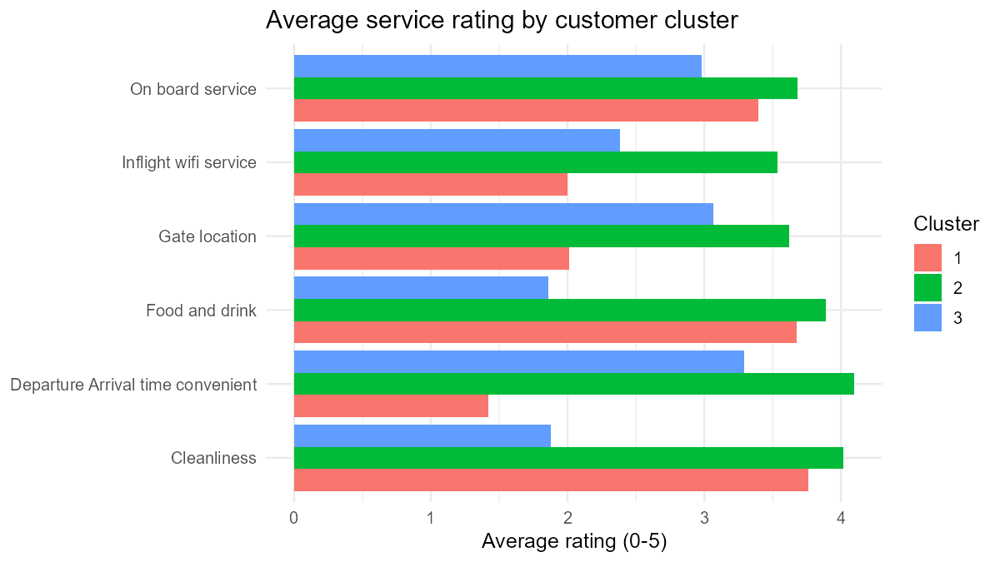
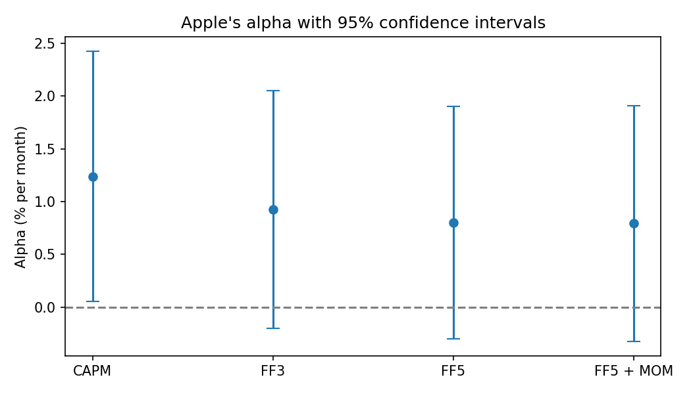
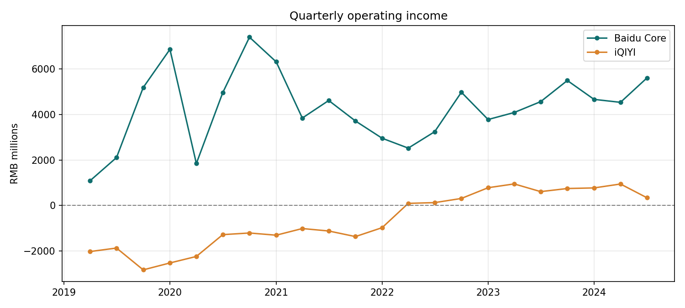
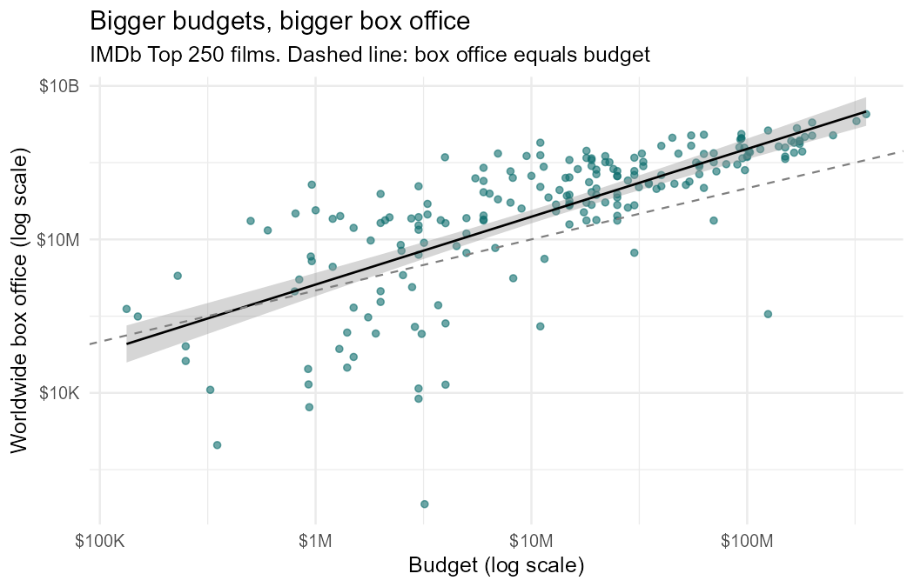

Megan (Yi-Feng) Hung
Data & Business Analytics
Business graduate with internship experience in consumer-insight analytics. I use Python, R and Excel to turn messy data into clear answers to business questions.
Skills
Projects

R Data Analytics Series
Six business questions, six methods: customer segments, decision trees, k-means, PCA, review sentiment and an A/B test.
90% accuracy predicting airline passenger satisfaction

Financial Econometrics
CAPM and Fama-French factor models for Apple, plus Monte Carlo checks that confidence intervals behave as promised.
Apple's alpha disappears once profitability is priced in

Baidu Segment Financials
Five years of quarterly revenue, cost and operating income for Baidu Core and iQIYI, compared in four charts.
iQIYI turned profitable by cutting costs, not by growing

IMDb Top 250 Box Office
Hypothesis tests, multiple regression and ridge regression on what goes with a high box office. Team project.
Budget explains box office; ratings do not
Public Restroom Map
Government open data and crowdsourced survey ratings merged into one interactive map of public restrooms around campus. Team project.
Coffee Shop Sales Analysis
An order database with forms, queries and reports, plus Excel models that find the most profitable product bundle. Team project.
FRED Macro Dataset
A reproducible pipeline that builds a monthly dataset of US inflation, interest rates and the output gap from public data.
Experience
Data Analysis Intern, Index Asia
Mar 2025 – Sep 2025
- Cleaned and processed more than 90,000 consumer feedback records in Excel.
- Ran share-of-voice and sentiment analysis to evaluate word-of-mouth strategies.
- Wrote consumer-insight reports for automotive, beauty and banking brands.
Project Management Intern, Sunnet
Jul 2024 – Aug 2024
- Analysed client requirements and wrote system design documentation for a new note-taking feature.
- Coordinated developers and designers; ran status meetings and managed the timeline.
HR Coordinator, NCCU Data Analytics Club
Jun 2023 – Jun 2024
- Ran recruitment and tracked member attendance and engagement.
Education
B.B.A. in International Business, National Chengchi University, Taiwan
2021 – 2025 · English Taught Program
Exchange semester, SKEMA Business School, France
Fall 2024